Stage 1 プログラムの機能を考える
1-2 動きの機能を考える
2048 のプログラミングで一番面倒な、盤面の操作について考えましょう。動かせる向きは上下左右の 4 方向、その方向に動くことで同じ数が足し合わされていきます。これをどうやって表現しましょうかね。

ただただ足してきゃいいんじゃねえの？
その「ただただ」の 4 文字に相当するアルゴリズムを考えようって話です。我々人間からすれば大したことはないのですが、脳のない機械にそれをさせるってなると、少しは頭を抱えなければいけません。
~~~~~~~~~~~~~~~
とりあえず盤面を上に動かす場合を例にとって考えてみましょう。この場合、盤面を上に動かしたらどうなるでしょうか。
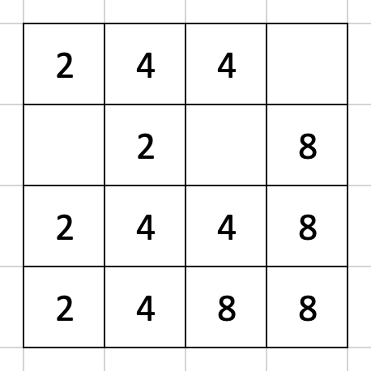全く難しい問題ではありませんが、これを機械にやらせるということを念頭に置いて、そのアルゴリズムを予想してみてください。

ナメんのも大概にせぇ、キサマ
とりあえず答えはこんなんですよね。まさか間違えるわけないとは思いますが。
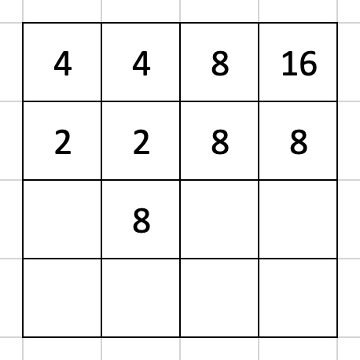~~~~~~~~~~~~~~~
さて、これをどうやってプログラミングしましょうか。とりあえず移動前の一番左上のマス [row, col] = [0, 0] に数を持ってくることを考えて、まずはその直下のマス [1, 0] に注目します。
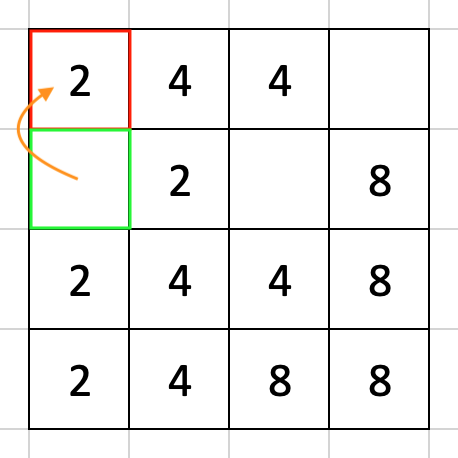この状態で [1, 0] == EMPTY, [0, 0] != EMPTY ですから、[1, 0] から [0, 0] に数を移動させることはできません。
一般的に 2 マスの考えうる関係は
[0, 0] == EMPTY and [1, 0] == EMPTY[0, 0] == EMPTY and [1, 0] != EMPTY[0, 0] != EMPTY and [1, 0] == EMPTY[0, 0] != EMPTY and [1, 0] == EMPTY
の 4 つですね。
~~~~~~~~~~~~~~~
リストの一番上、両方とも EMPTY であれば数字の動かしようがありません。例えばこんな感じ。
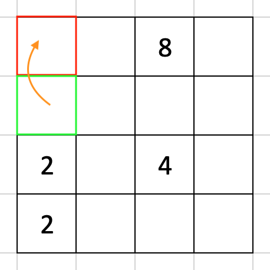[1, 0] != EMPTY, [0, 0] == EMPTY の場合、数字を [0, 0] に持ってこなければなりません。
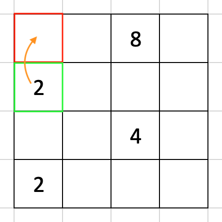[1, 0] は数字がなくなるわけですから、当然 EMPTY にします。
リストアップした三番目、[0, 0] だけが EMPTY でない場合も何もする必要はありません。
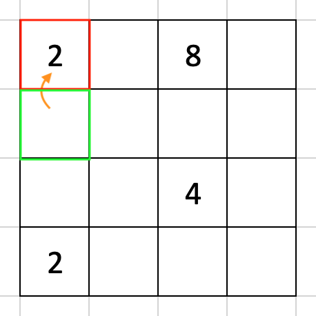問題は 4 番目です。こいつには
0 != [0, 0] == [0, 1] != 00 != [0, 0] != [0, 0] != 0
の 2 通りあり、対処も異なってきます。
両方の数が揃う場合は単純で、[0, 0] にある数を 2 倍、[1, 0] を EMPTY にすれば事足ります。
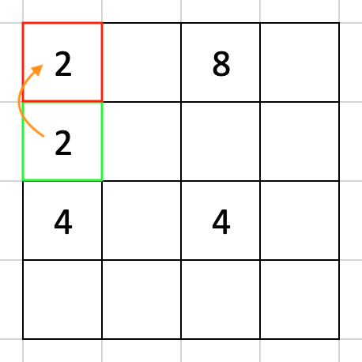一方で両方の数字が揃わない場合、この段階で特にやることはありませんが、こういう場合はどうでしょうか。
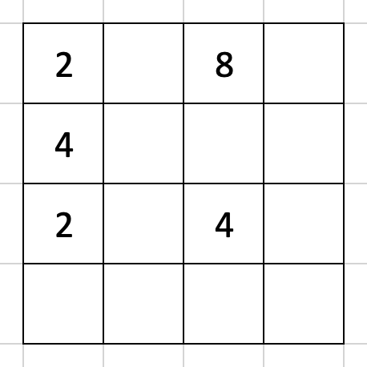
なんかおかしいとこあっか？
まずは [1, 0] から [0, 0] に数を動かす場合を考えますね。
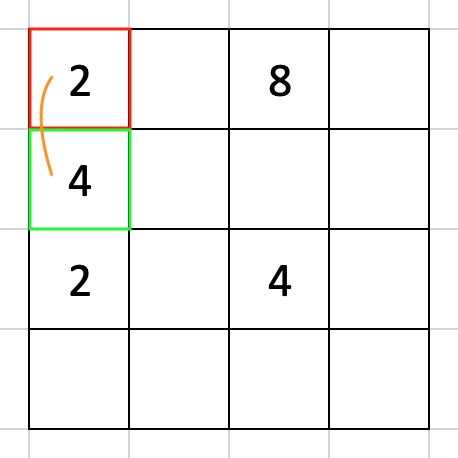この次に [2, 0] と [0, 0] を比較して数字を移すか考えるわけですが、当然この二つの間で数のやりとりはできません。
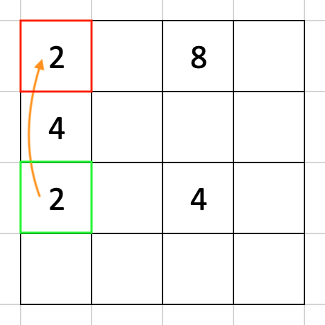もっと言えば、もし [3, 0] に 2 があっても [0, 0] とは数のやりとりはできませんから、[0, 0] に数字を持ってくる場合について考える必要はもうないことになります。
~~~~~~~~~~~~~~~
ここまでのフローを示すとこうなりますね。
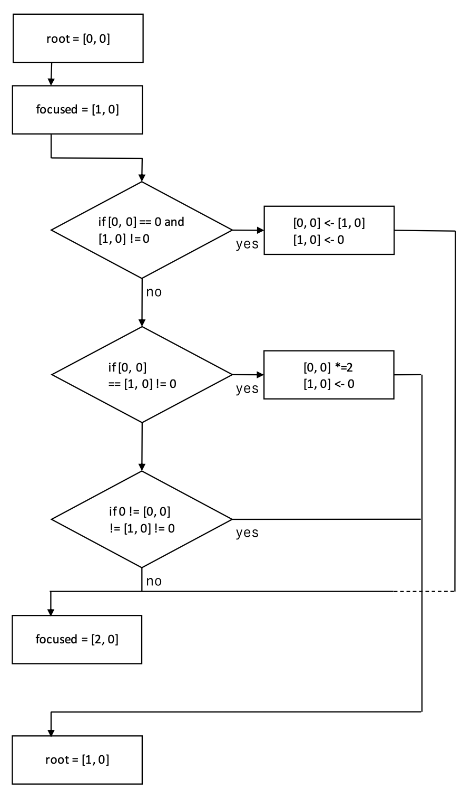
うわっっめんどっっくせ〜
これ以上は Stage 4 で扱うことになりますが、一応大筋として頭の中に入れておいてください。